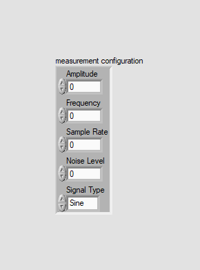
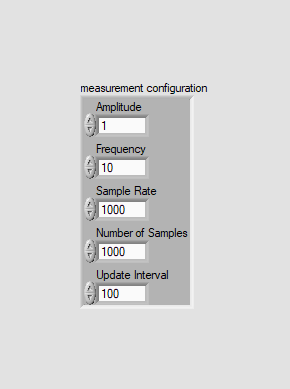
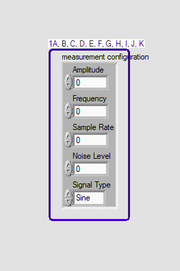
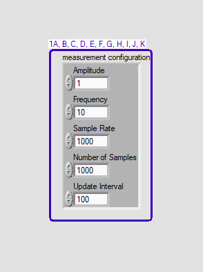
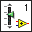

LabVIEW VI Comparison Report
10/28/2026 8:32:36 AM
First VI: C:\workspace-base\Signal Simulator Plug-In\Measurement Configuration.ctlSecond VI: C:\workspace\Signal Simulator Plug-In\Measurement Configuration.ctl
| Front Panel Overview | ||
|
 |
 | |
| Block Diagram Overview | ||

|
- Front Panel
- Front Panel Position/Size
- Block Diagram Functional
- Block Diagram Cosmetic
- VI Attribute
Detailed Information
1. Front Panel - Cluster
| C:\workspace-base\Signal Simulator Plug-In\Measurement Configuration.ctl | C:\workspace\Signal Simulator Plug-In\Measurement Configuration.ctl | |
|
 |
 |
- Cluster "measurement configuration" - cluster elements replaced/added/deleted : changed from "Signal Type" to "Update Interval"
- Cluster "measurement configuration" - resized : changed from "83*216" to "114*214"
- Numeric "Amplitude" - data value : changed from "0.000E+0" to "1.000E+0"
- Numeric "Amplitude" - default data value : changed from "0.000E+0" to "1.000E+0"
- Numeric "Frequency" - data value : changed from "0.000E+0" to "10.000E+0"
- Numeric "Frequency" - default data value : changed from "0.000E+0" to "10.000E+0"
- Numeric "Sample Rate" - data value : changed from "0.000E+0" to "1.000E+3"
- Numeric "Sample Rate" - default data value : changed from "0.000E+0" to "1.000E+3"
- Numeric "Number of Samples" - data type name : changed from "Noise Level" to "Number of Samples"
- Numeric "Number of Samples" - numeric representation : changed from "'Noise Level': double [64-bit real (~15 digit precision)] " to "'Number of Samples': unsigned long [32-bit integer (0 to 4,294,967,295)] "
- Numeric - format and precision
2. VI Attribute - Miscellaneous
| C:\workspace-base\Signal Simulator Plug-In\Measurement Configuration.ctl | C:\workspace\Signal Simulator Plug-In\Measurement Configuration.ctl | |
|
 |
- VI icon